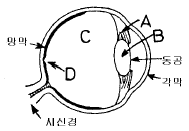
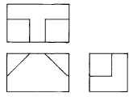
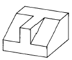
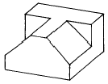
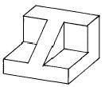
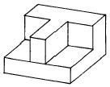

제품디자인산업기사 (2004-05-23 기출문제)
1과목: 제품디자인론
1. 최근에 들어 신제품 개발이 특히 어려워지고 있는 이유로 적당치 않은 것은?
- 신제품에 대한 아이디어의 빈곤
- 신제품 개발에 소요되는 비용의 증가
- 제품 수명주기의 장기화
- 기존 제품의 변경이나 모방 선호 현상
(정답률: 알수없음)

2. 다음 산업디자인 제품 중 기업체 및 공공단체에서 주로 소유하는 것으로 자본재 또는 내구재로 분류되는 것은?
- 오락용 설비제품
- 엑스레이(X-ray) 장치
- 소독 및 전기치료기
- 인쇄 및 동력장치
(정답률: 91%)
3. 미적 구성원리 중 가장 중요한 것은?
- 리듬
- 변화
- 대칭
- 조화
(정답률: 92%)
4. 사무용 가구제품으로서 사용에 따라 구조 및 공간의 변경과 합리성을 높일 수 있는 디자인을 위해서는 어떤 조합법이 가장 좋은가?
- 시리이즈(series)
- 유니트(unit)
- 패밀리(family)
- 세트(set)
(정답률: 93%)
5. 디자인 운동과 그 운동의 중심적 인물의 관계설정이 잘못된 것은?
- 아르누보 : 반 데 벨데
- 바우하우스 : 윌터 그로피우스
- 드스틸 : 몬드리안
- 독일공작연맹 : 말레비치
(정답률: 90%)
6. 기능주의(functionalism)는 기능을 건축이나 디자인의 핵심 또는 지배적 요소라고 보는 입장을 가르키는 말이다. 이러한 기능주의의 원리와 거리가 먼 것은?
- 구조(construction)
- 재료(material)
- 환경(environment)
- 형태와 기능(form & function)
(정답률: 82%)
7. 디자인 매니저가 갖추어야 할 자질에 포함되지 않는 것은?
- 고도의 미적 감각
- 명확한 판단력
- 예견력
- 독단력
(정답률: 알수없음)
8. 영국에서 아트 앤드 크라프트(Art and Crafts)운동을 일으킨 사람은?
- 오토 바그너(Otto Wagner)
- 헨리 반 데 벨데(Henri Van de velde)
- 윌리엄 모리스(William Morris)
- 요셉 호프만(Josef Hoffmann)
(정답률: 알수없음)
9. 공업제품의 미적인 속성으로서 형태요소에 해당하지 않는 것은?
- 형태
- 재료
- 질감
- 조화
(정답률: 67%)
10. 1970년대에 자본주의의 생산과 소비의 순환구조 속에서 발생하는 디자인의 부정적 측면을 거부하고, 산업으로부터 독립하여 디자이너의 사회적 역할, 장애자, 생태학적문제 등에 관심을 돌린 디자인 운동가는 누구인가?
- 에토레 소트사스(Ettore Sottsass)
- 디에테르 람스(Dieter Rams)
- 챨스 메킨토시(Charles Mackintosh)
- 빅터 파파넥(Victor Papanek)
(정답률: 70%)
11. 다음 중 아르 누보와 관계없는 것은?
- 곡선적 장식
- 사무엘 빙(Samuel Bing) 상점
- 앙리 반 데 벨데(Henry Van de Velde)
- 르 꼬르뷔지에(Le Corbusier)
(정답률: 75%)
12. 다음 현대디자인의 특징에 관한 설명 중 적합하지 않는 것은?
- 디자인은 대상물의 형태에 덧붙이는 장식적 배열로 아름다움이 목적이다.
- 디자인은 관념적인 것이 아니므로 실체를 떠나서는 생각할 수 없다.
- 조형요소를 의도적으로 선택하여 합리적으로 구성하는 창의적인 활동이다.
- 주어진 목적물의 기능과 사용성을 전제로 하며 조형적으로 실체화 하는 것이다.
(정답률: 93%)
13. 다음 중 3차원 디자인에 해당되는 것은?
- 포토 디자인(Photo Design)
- 일러스트레이션(Illustration)
- 타이포그래피(Typography)
- 윈도우 디스플레이(Window Display)
(정답률: 92%)
14. 공업제품의 모든 분야에 유선형(Stream Line)양식을 유행시켰던 인물은?
- 노르만 벨 게데스(Norman Bel Geddes)
- 월터 그로피우스(Walter Gropius)
- 핸리 드레이퍼스(Henry Dreyfuss)
- 루이스 설리반(Louis Sullivan)
(정답률: 46%)
15. 미국의 자동차회사 포드는 오랫동안 모델 T카들을 3S를 바탕으로 가격을 낮춤으로 경쟁력을 지속시킬 것으로 기대했다. 다음 중 3S에 해당하지 않는 것은?
- 제품의 단순화
- 부품의 표준화
- 외형의 세련화
- 공정의 전문화
(정답률: 100%)
16. 아이디어 발상의 폭을 넓히는 방법 중 '유사 연상'에 대한 사례는?
- 여자에 대하여 남자를 떠올린다
- 여자에 대하여 여자인형을 떠올린다
- 여자에 대하여 립스틱을 떠올린다
- 여자에 대하여 모성을 떠올린다
(정답률: 37%)
17. 갈라 놓았을 때 양쪽이 꼭 같은 모양으로 거울에 비친 도형과 같은 형식원리를 무엇이라고 하는가?
- 반복(repitition)
- 균형(balance)
- 균제(symmetry)
- 비례(proportion)
(정답률: 알수없음)
18. 제품 개발의 의미로 가장 적합치 않은 것은?
- 기존제품의 특성을 그대로 유지한다
- 기존제품의 품질 및 포장을 개선한다
- 제품의 기능 개선으로 신용도를 높인다
- 소비자 욕구에 부응하여 새롭게 개발한다
(정답률: 100%)
19. 독일공작연맹(DWB)에 대한 설명 중 잘못된 것은?
- 사회를 위한 조형이어야 한다는 이념
- 미술(Art), 공업(Industry), 상업(Trade)을 집결한 생산품의 품질향상 운동
- 즉물적(기능적)인 사고방식의 조형관
- 장식적인 디자인의 산업적 응용
(정답률: 92%)
20. 산업혁명으로 인한 교통의 발달로 유럽 및 각국의 제품들을 한 곳으로 모을 수 있는 전기가 마련되었는데 이를 무엇이라 명명하는가?
- 만국 박람회
- 바티마이어
- 전위적 조형운동
- 살롱듀산드 마르스 전람회
(정답률: 알수없음)
2과목: 인간공학
21. 다섯개 이하의 감시용 다이얼형 계기를 수평으로 늘어놓을 때에 정상적인 작동상태에서는 지침들이 한 방향으로 향하도록 해야 하는데 몇시 방향이 가장 바람직한가?
- 2시
- 6시
- 9시
- 12시
(정답률: 알수없음)
22. 동적인 표시장치가 아닌 것은?
- 온도계
- 기압계
- 저울
- 교통안내표지
(정답률: 100%)
23. 다음 중 시각적으로 형태를 인식할 수 있게 해주는 게슈탈트(Gestalt)법칙이 아닌 것은?
- 접근성(protimity)
- 유사성(Similarity)
- 다양성(Variability)
- 폐쇄성(Closure)
(정답률: 50%)
24. 다음 사람눈의 구조 그림에서 수정체의 위치는?

- A
- B
- C
- D
(정답률: 67%)
25. 실내디자인의 퍼센타일 적용에 있어 도달거리(reach)가 가장 중시되는 디자인과 관련된 사항은?
- 선반
- 의자 높이
- 문의 폭
- 붙박이 가구
(정답률: 73%)
26. 소리 크기를 정하는 단위가 아닌 것은?
- 폰(phon)
- 손(sone)
- 멜(mel)
- 데시벨(dB)
(정답률: 65%)
27. 녹음 스튜디오의 바람직한 소음 강도는?
- 55 dB 이하
- 45 dB 이하
- 35 dB 이하
- 25 dB 이하
(정답률: 알수없음)
28. 다음은 인간공학과 관계된 학문 영역 중 가장 관계 먼 것은?
- 인간체계의 과학
- 기계체계의 과학
- 환경체계의 과학
- 경제체계의 과학
(정답률: 알수없음)
29. 1옥타브 차이가 나는 같은 두 음의 진동수 비율이 얼마인가?
- 1:1
- 2:1
- 4:1
- 5:1
(정답률: 알수없음)
30. 다음 중 형태의 존재를 인식하는데 가장 중요한 역할을 하는 감각기관은?
- 시각
- 후각
- 촉각
- 미각
(정답률: 91%)
31. 동작경제의 원리(Principles of Motion Economy)와 거리가 먼 것은?
- 급격한 직선운동이 좋다.
- 팔꿈치는 몸가까이 붙이는 것이 좋다.
- 제한 운동보다는 자연스런 운동이 좋다.
- 중력의 법칙에 역행하지 않는것이 좋다.
(정답률: 90%)
32. 인간 기계 시스템에서 인간이 하지 않아도 좋은 것은?
- 입력의 성격을 정한다.
- 출력의 성격을 정한다.
- 예상치 않은 상황에 대처한다.
- 반복적인 일을 수행한다.
(정답률: 알수없음)
33. 조작장치(control)의 인간공학적 설계 고려사항 중 맞지 않는 것은?
- 사용할 때 심리적, 역학적, 능률을 고려할 것
- 제어장치 움직임과 위치, 제어대상이 서로 맞을 것
- 조작장치의 운동과 표시장치의 표시가 같은 방향일 것
- 가장 자주 사용하는 조작장치는, 어깨전방의 상단에 설치할 것
(정답률: 85%)
34. 삼차원의 대상은 일정한 방향에서 사조사(斜照射)를 하면 하이라이트와 음(陰)의 관계에서 깊숙한 곳이 명료하게 된다. 이 조명에 의해서 평면의 흠을 찾아낸다든가 섬유의 올을 검사하든가 할 때의 조명양식으로는 다음 어느 것이 적합한가?
- 정형조명
- 긴장조명
- 색채조명
- 방향조명
(정답률: 50%)
35. 인간공학적 설계원칙 중 경고 표지판 제작시 유의할 사항이 잘못된 것은?
- 크기, 모양, 색상, 상징성 등이 눈에 잘띄어야 한다.
- 읽기 편해야 한다.
- 간결해야 하므로 가능한 한 준말을 사용한다.
- 표준 규격에 맞추어야 한다.
(정답률: 100%)
36. 소음이 있는 곳에서 작업하는 사람들에게 나타나는 현상과 거리가 먼 것은?
- 신경질적이다.
- 침착성을 잃는다.
- 불쾌감을 잃는다.
- 피로하기 쉽다.
(정답률: 알수없음)
37. 간상세포(ROD)의 기능은?
- 명암식별
- 색채식별
- 형태구별
- 크기구별
(정답률: 64%)
38. 빛의 강도와 시각과의 관계에 있어서 맞는 말은?
- 배경이 어두우면 약한 빛이 비교적 확실히 보인다.
- 배경이 밝으면 약한 빛이 더욱 확실히 보인다.
- 배경이 어두우면 약한 빛은 보이지 않는다.
- 배경과 밝기와는 아무 관계도 없다.
(정답률: 95%)
39. 한번의 자발적(voluntary)인 노력에 의해 근육이 등척적(isometric)으로 낼 수 있는 힘의 최대치를 무엇이라고 부르는가?
- 최대 지구력
- 최대 염력
- 최대 근력
- 최대 완력
(정답률: 77%)
40. 다음 조명 설계시 필요한 요소 중 틀린 것은?
- 작업 중 손가까이를 일정하게 비출 것
- 작업 중 손가까이를 적당한 밝기로 비출 것
- 광원이나 다른 물건에서 눈부신 반사가 없도록 할 것
- 작업부분과 배경사이에 적당한 콘트라스트(contrast)가 없을 것
(정답률: 알수없음)
3과목: 공업재료 및 모형제작론
41. 다음 중 열가소성 수지가 아닌 것은?
- 폴리스틸렌 (Polystyrene) 수지
- 폴리에틸렌 (Polyethylene) 수지
- 폴리우레탄 (Polyurethane) 수지
- 폴리에스테르 (Polyester) 수지
(정답률: 알수없음)
42. 디자인 작업상 형태와 인간과의 대응에 의한 조작성(操作性), 혹은 환경 등과의 관계를 검토하는데 표현방법상 가장 관계가 깊은 것은?
- 드로잉(drawing)
- 모델링(modeling)
- 테크니컬 일러스트레이션(technical illustration)
- 렌더링(rendering)
(정답률: 55%)
43. 제품의 색채 계획과 관계가 없는 것은?
- 제품구조와 상관 관계에 의해 계획된다.
- 제품 성격의 이미지를 형성한다.
- 제품에 흥미를 일으켜 매력을 준다.
- 경쟁 제품과 차별화 시킨다.
(정답률: 알수없음)
44. 목재모형의 재료로서 적합하지 않은 것은?
- 은행나무
- 피나무
- 흑단
- 발사(balsa)목
(정답률: 67%)
45. 다음 플라스틱 성형방법 중 파이프, 튜브, 시트필름 등을 만드는데 주로 사용되는 방법은?
- 압출성형
- 사출성형
- 압축성형
- 진공성형
(정답률: 37%)
46. 플라스틱 재료가 갖는 장점이 아닌 것은?
- 경량성
- 자연성
- 방수성
- 양산성
(정답률: 알수없음)
47. 목재의 건조법 중 열탕에 넣어서 쪄냄으로써 내부의 수액을 추출시켜 급속히 건조시키는 방법은?
- 열기건조법
- 중기건조법
- 자비법
- 연기건조법
(정답률: 알수없음)
48. 경화속도는 느리지만 한 번 경화되면 고강도를 가져 마루바닥, 인조석 등으로 사용되는 재료는?
- 경석고 플라스터
- 소석고 플라스터
- 돌로마이트 플라스터
- 마그네시아 시멘트
(정답률: 64%)
49. 색과 색이 만나는 경계면이 서로 겹치도록 하는 제판 기법은?
- 오버래핑 (overlapping)
- 트래핑 (trapping)
- 믹싱 (mixing)
- 템퍼링 (tempering)
(정답률: 64%)
50. 석고 모형제작시 깨어짐을 방지하기 위한 보강재로 가장 알맞은 재료는?
- 그물
- 낚시줄
- 철사
- 삼
(정답률: 알수없음)
51. 다음 중 블로우 성형으로 만들 수 있는 것은?
- 병
- 보턴
- 전화기
- 전자제품케이스
(정답률: 알수없음)
52. 금속 재료의 특성을 열거하였다. 틀린 것은?
- 금속 특유의 광택을 가지고 있다.
- 열과 전기의 양도체이다.
- 상온에서는 고체이다.
- 소성 변형을 할 수 없다.
(정답률: 50%)
53. 나무에 기생하는 곤충의 분비물을 정제한 천연수지는 어떤 것인가?
- 로진
- 댐머
- 코오펄
- 셀락
(정답률: 59%)
54. 다음 중 피착물에 대한 전처리시 용제, 산, 알칼리 처리가 필요치 않는 것은?
- 금속
- 염화비닐
- 하드보오드
- 대나무, 목재
(정답률: 50%)
55. 다음 중 러프 목업 모델(Rough Mock-up model)을 맞게 설명한 것은?
- 치수, 형태, 색채, 재료, 구조 등이 구체화된 모형
- 의뢰자에게 제시하여 생산에 차질이 없도록 제시되는 모형
- 양산될 제품의 원형과 같으며 작동이 될 수 있는 모형
- 아이디어의 확인을 위해 손쉬운 재료로 빠른 시간 내에 만드는 모형
(정답률: 알수없음)
56. 합성섬유에 해당되지 않는 것은?
- 나일론
- 폴리에스테르
- 아크릴
- 아세테이트
(정답률: 알수없음)
57. 다음의 3면도를 보고 유추할 수 있는 입체는?





(정답률: 92%)
58. 부식을 방지하고 고광택의 장식성을 목적으로 하는 금속소재의 하지도금으로 사용되는 도금은?
- 니켈 도금
- 크롬 도금
- 합금 도금
- 진공 도금
(정답률: 55%)
59. 물체의 모서리를 45° 경사로 비스듬히 잘라내는 것을 모따기라 한다. 표시기호는?
- R
- ø
- C
- t
(정답률: 73%)
60. 충격강도를 크게 하고 간단한 제조공정이 가능하도록 발전시킨 소지로서, 얇은 단면은 투과성이 있으며 cone 9~11(1250℃~1285℃)에서 소성되는 자기는?
- 저주파용 전기자기
- 결정자기
- 패리안 자기
- 식기용 자기
(정답률: 60%)
4과목: 색채학
61. 다음 제품색채에 관한 기술 중 잘못된 것은?
- 유행색은 주기적으로 바뀌는 경향이 있다.
- 색채디자인에서 시장조사는 필수적이다.
- 소비자가 원하는 이미지를 색채로 나타내는 것도 좋다.
- 제품의 기능과 색채는 별개이므로 그 시기에 유행하는 색을 선택하면 된다.
(정답률: 100%)
62. 색채조화의 이론 중 공통되는 원리에 해당되지 않는 것은?
- 질서의 원리
- 친근성의 원리
- 동류의 원리
- 모호성의 원리
(정답률: 46%)
63. 터널의 출입구 부근에 조명이 집중되어 있고 중심부로 갈수록 조명수를 적게 배치하는 것은 어떤 순응을 고려한 설계인가?
- 명순응
- 암순응
- 색순응
- 무채순응
(정답률: 92%)
64. 소방차에 빨강을 사용하는 원리가 아닌 것은?
- 연상
- 주목성
- 대비
- 상징성
(정답률: 82%)
65. 태양광선이 프리즘을 통하면 스펙트럼이 형성된다는 것을 처음 발표한 사람은 누구인가?
- 헤링
- 헬름홀츠
- 뉴튼
- 토마스 영
(정답률: 80%)
66. 색의 온도감(溫度感)을 좌우하는 가장 큰 요소는?
- 색상
- 명도
- 채도
- 면적
(정답률: 알수없음)
67. 다음 색 중 연구실이나 주의 집중이 필요한 공간에 사용하는 색으로 가장 부적합한 것은?
- 녹색
- 파랑
- 노랑
- 회색
(정답률: 77%)
68. 색의 맑거나 흐린 정도의 차를 의미하는 것은?
- 명도
- 채도
- 색상
- 색입체
(정답률: 86%)
69. 물체색의 3속성(색상, 명도, 채도)과 빛의 3속성(휘도, 순도, 주파장)이 올바르게 대응된 것은?
- 주파장 → 색상, 휘도 → 명도, 순도 → 채도
- 주파장 → 명도, 휘도 → 색상, 순도 → 채도
- 주파장 → 채도, 휘도 → 명도, 순도 → 색상
- 주파장 → 색상, 휘도 → 채도, 순도 → 명도
(정답률: 86%)
70. 다음은 오스트발드의 등색상 삼각형에 있어서의 조화를 기호로 나타낸 것이다. 그 중 등흑계열의 조화에 해당하는 것은?
- pn - pi – pe
- ec - ic - nc
- ca - ge – li
- gc - lc - lg
(정답률: 30%)
71. 문.스펜서의 색채조화론에서 부조화의 경우에 해당되지 않는 것은?
- 눈부심(glare)
- 제 1 부조화(first ambiguity)
- 제 2 부조화(second ambiguity)
- 제 3 부조화(third ambiguity)
(정답률: 알수없음)
72. 오스트발트 표색계의 설명 중 잘못된 것은?
- 헤링의 4원색설을 기본으로 하였다.
- 백색량, 흑색량, 순색량의 합을 100%로 하였다.
- 색입체의 모양은 복원추체이다.
- 색에 따라서 혼합량의 합은 일정치 않다.
(정답률: 알수없음)
73. 서로 반대되는 경향으로 변해보이는 색의 대비효과와는 달리 주위색의 영향으로 오히려 인접색에 가깝게 느껴지는 현상은?
- 색의 동시대비현상
- 색의 동화현상
- 중간혼합현상
- 푸르킨예현상
(정답률: 알수없음)
74. 병치혼합에 대한 설명으로 맞는 것은?
- 가법혼색의 일종으로 어느 정도 떨어진 거리에서 볼 때 백색으로 보인다.
- 인상주의 작가들의 작품과 직물 등에서도 많이 볼 수 있다.
- 두 가지 이상의 색을 점으로 찍었을 때 나타나는 현상으로 대비가 심하다.
- 여러가지 많은 색, 점들이 동시적으로 나열되어 있는 경우에 일어나는 감법혼색의 일종이다.
(정답률: 24%)
75. 다음 배색 중 가장 명시도가 높은 것은?
- 흑색 바탕의 황색
- 흑색 바탕의 청색
- 백색 바탕의 황색
- 백색 바탕의 청색
(정답률: 100%)
76. 다음 색채조절에 관한 설명 중 적절하지 못한 것은?
- 장시간 보여지는 대상물에 대해서는 고명도 고채도는 피한다.
- 색채조절을 하기 위해서는 다양한 칼라를 사용해야만 한다.
- 실내에 있어서 조명의 특성을 이용하여 조명 효율을 높인다.
- 색채에 의한 심리적 효과를 이용하여 그 방의 이용가치를 높인다.
(정답률: 알수없음)
77. 스펙트럼은 빛의 어떠한 현상에 의한 것인가?
- 흡수
- 굴절
- 투과
- 직진
(정답률: 100%)
78. 인물과 색채조화 이론이 맞게 짝지어진 것은?
- 셰브렐(M.E.Chevreul) - 유사색의 배색은 좋지만 색상차가 커지면서 조화가 무너져 간다.
- 무운· 스펜서(Moon· Spencer) - 미는 복잡성 속의 질서성을 가진 것이다.
- 훼히너(G.T.Fechner) - 둘 이상의 색사이에는 어떤 합법적인 관계(서열)가 존재할 때 즐거운 감정이 생긴다.
- 럼포드(Rumford) - 두 색은 이들을 혼색시킬 때 완전한 무채색이 되는 경우에만 조화한다.
(정답률: 알수없음)
79. 색상의 그라데이션(gradation)이란?
- 강조색이 없는 배색의 상태
- 한 가지 색이 다른 색채로 옮겨갈 때 진행된 변화
- 여러 주조색으로 인해 통일된 상태
- 유사색상의 조화된 상태
(정답률: 알수없음)
80. 다음 중 가장 큰 팽창색은?
- 고명도, 저채도, 한색계의 색
- 저명도, 고채도, 난색계의 색
- 고명도, 고채도, 난색계의 색
- 저명도, 고채도, 한색계의 색
(정답률: 84%)